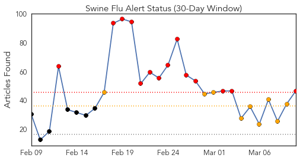
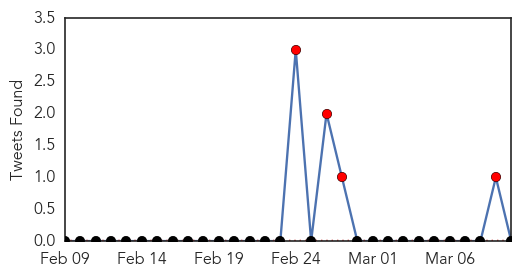
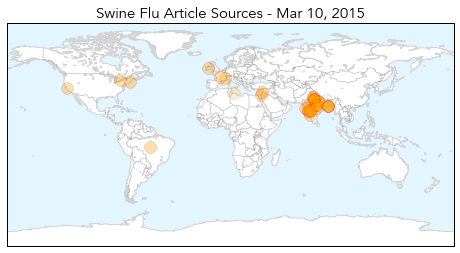
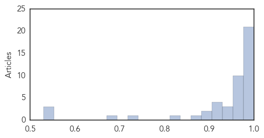

Swine Flu
30-Day Web Trend
14 alerts, 9 warnings

30-Day Twitter Trend
2 alerts, 0 warnings

Article Locations
Article Confidences
Top Articles:
- 1.000
- Serum Institute set to launch fresh batch of H1N1 vaccine
- 0.999
- Swine flu in India: Haryana Minister recommends unique way to prevent swine flu
- 0.999
- Woman succumbs to swine flu, toll now 21
- 0.999
- Two doctors show swine flu symptoms
- 0.999
- Give Tamiflu to high-risk patients without delay, directs health dept
- 0.999
- Weather change in Delhi may bring down swine flu cases but will lead to more ailments: Doctors : India, News
- 0.998
- Preventive measures for swine flu control must be continued
- 0.998
- Madhya Pradesh CM said that preventive measures for swine flu control must be continued, Odisha Current News, Odisha Latest Headlines
- 0.998
- Weather change in Delhi will lead to more ailments: Doctors
- 0.998
- Two more test positive for swine flu
- 0.997
- With 193 deaths, MP fourth among 22 swine flu-affected states
- 0.996
- H1N1 claims 193 lives in Madhya Pradesh, CM holds review meet
- 0.993
- Say 'namaskar' -- to avoid swine flu: Haryana minister
- 0.993
- NIV to test samples of only serious cases
- 0.991
- Lebanon medics deny swine flu behind deaths of 2 patients
- 0.991
- HC ticks off petitioner for PIL based on newspaper reports
- 0.990
- Indian city bans public gatherings over swine flu fears
- 0.989
- Flu patients advised optimum rest for recovery
- 0.987
- Swine flu claims 3
- 0.986
- Gujarat swine flu toll mounts to 353
- 0.986
- Steps taken to face Swine flu threat
- 0.976
- Two more die due to swine flu in Uttar Pradesh
- 0.976
- Swine Flu: 4 more H1N1 deaths reported from Maharashtra; toll mounts to 215
- 0.974
- Swine flu in Himachal under control
- 0.973
- Swine flu claimed 27 lives, says Vij
- 0.973
- Swine flu in Himachal under control
- 0.973
- Swine flu in Himachal under control
- 0.971
- Swine flu in Himachal under control
- 0.967
- Swine flu: Army holds awareness camp in Srinagar
- 0.964
- Assam swine flu toll at 2, MBBS intern found H1N1 positive
- 0.953
- Mumbai gets only 100 doses of swine flu vaccine from state
- 0.949
- Orientation programmes for doctors treating H1N1 patients
- 0.941
- Swine flu kills senior doctor, kin demand compensation
- 0.938
- Congress to hold Swine flu awareness camp in Delhi
- 0.929
- Did the swine flu jab give little Mathilda a crippling sleep disorder?
- 0.925
- Palestinian from Bethlehem dies of H1N1 swine flu: medics - Xinhua
- 0.916
- Swine flu toll in Bengal rises to 17
- 0.909
- This Mumbai chemist's entire family tests positive for swine flu
- 0.903
- PIL filed in HC against rising swine flu cases in Maharashtra
- 0.897
- Woman admitted to GH with symptoms of H1N1
- 0.870
- DonÂ’t have soap, water? Use sanitizer!
- 0.829
- Congress to launch three-day campaign against swine flu
- 0.728
- Kin of doctor who died of H1N1 seek damages
- 0.678
- Mulayam Singh Yadav tests negative for swine flu, recovering well: Doctors
- 0.553
- Abou Faour Says Contaminated Spices Found during Inspections — Naharnet
- 0.551
- Delhi Bharatiya Janata Party hits out at Aam Aadmi Party government over swine flu issue
- 0.530
- Officials inspect private labs
Top Tweets:
-
No tweets found for Mar 10, 2015
Bubonic Plague
30-Day Web Trend
0 alerts, 0 warnings

30-Day Twitter Trend
0 alerts, 0 warnings

Article Locations

Article Confidences

Top Articles:
-
No articles found for Mar 10, 2015
Top Tweets:
-
No tweets found for Mar 10, 2015